Three questions I get
Which tools can we use?
Which tools should we (not) use?
Which tools do we need to develop?


Six questions to ask of any tool
Which model?
Name and version. "AI" is not an answer.
Where does it run?
Your machine, your institution, an EU data centre, the US.
Where do my data go?
Prompt, files, recordings. Stored? Trained on?
Who owns the output?
And can you sell a work made with it?
Same result next year?
Reproducibility for research; continuity for a repertoire piece.
What does it cost?
Per month, per hour of GPU, per kilowatt-hour.
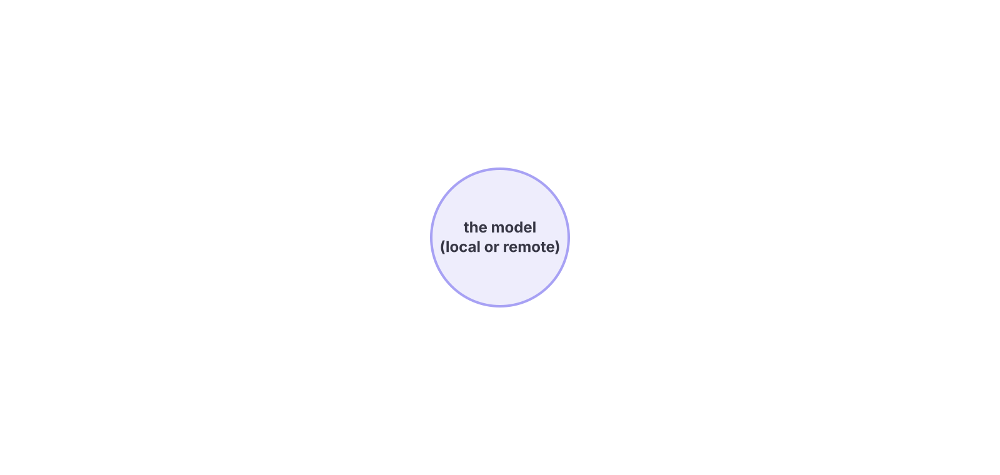
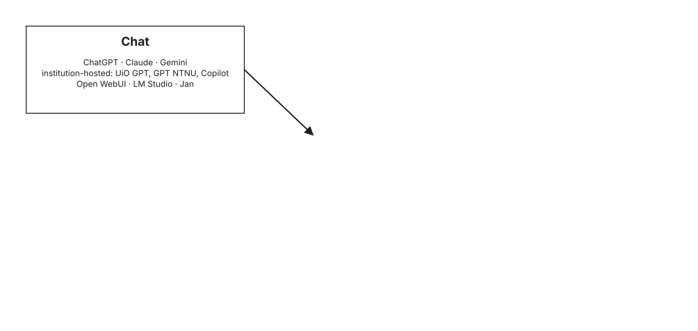
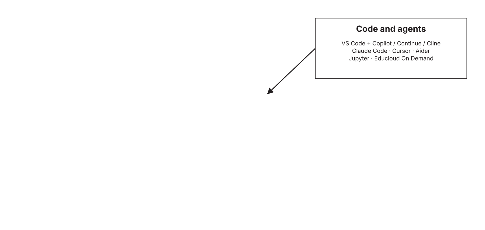
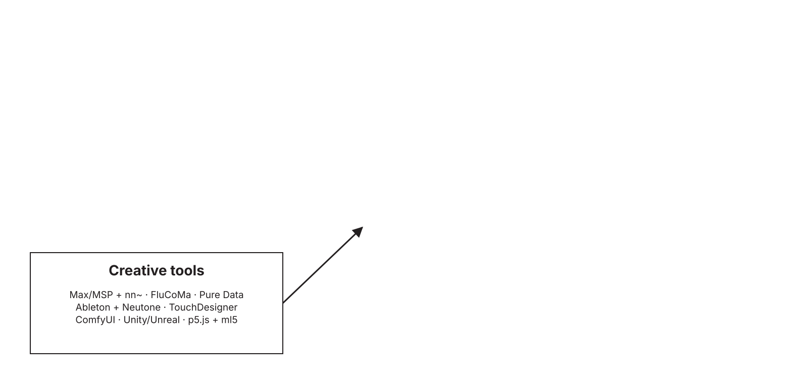
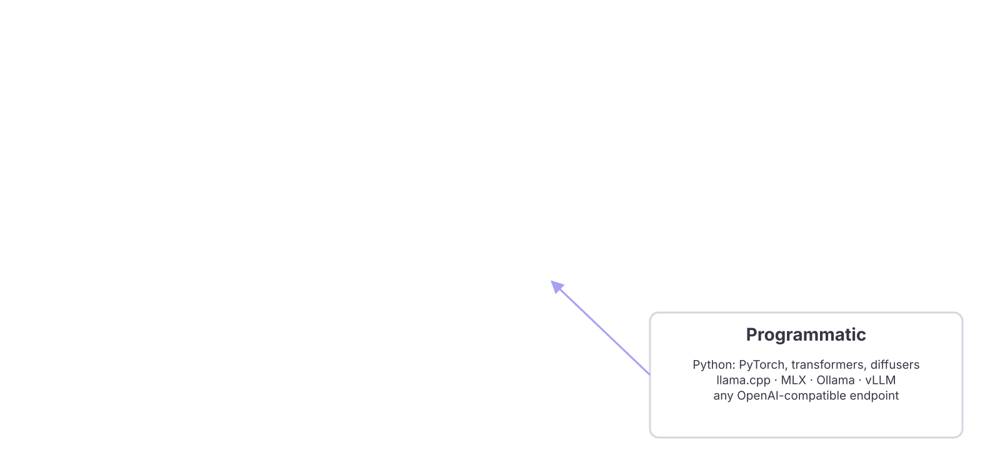
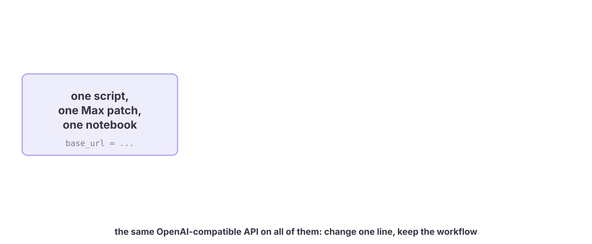
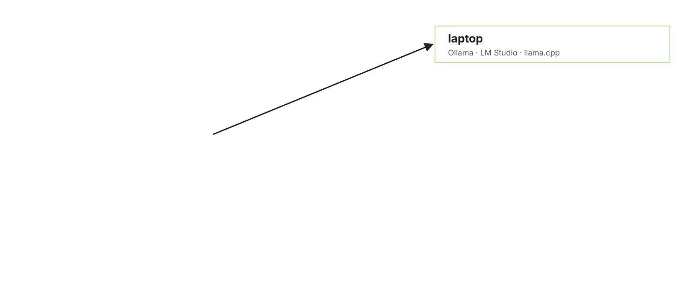
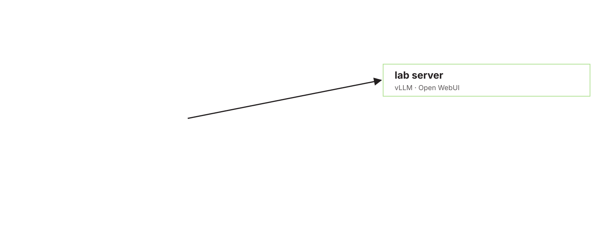
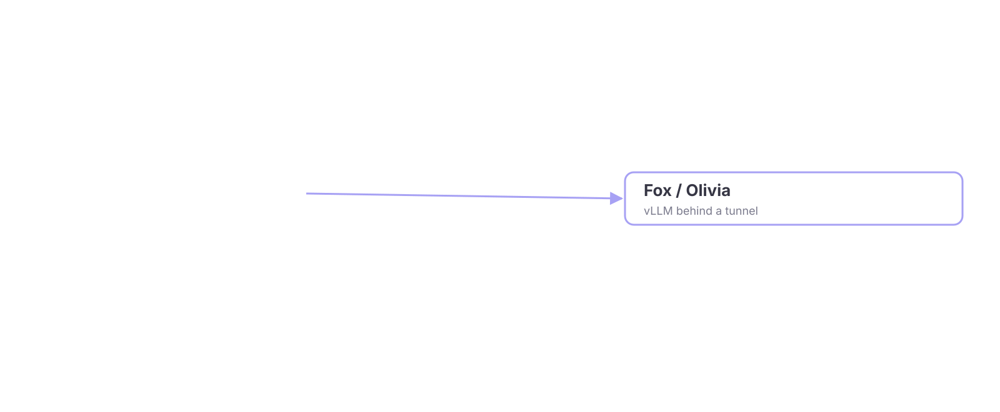
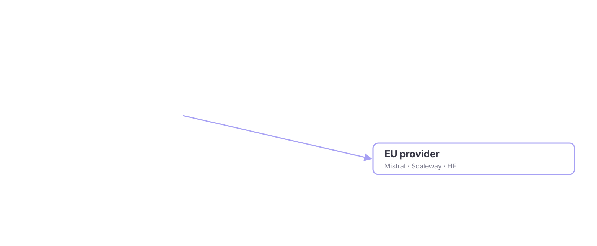
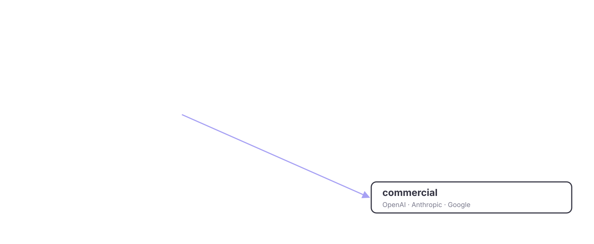
Tool is not model


Language
Llama · Mistral · Gemma · Qwen · DeepSeek · Phi
Norwegian: NorMistral (UiO) · NorLLM (NorwAI/NTNU) · NB-GPT
Speech
Whisper · faster-whisper · Piper · XTTS · Kokoro
Norwegian: NB-Whisper (National Library)
Music and audio
RAVE (IRCAM) · MusicGen / AudioCraft · Stable Audio Open · ACE-Step · YuE
Norwegian: none
Image
Stable Diffusion · SDXL · FLUX
Norwegian: none
Video
Wan · HunyuanVideo · LTX
Norwegian: none
Vision, motion, multimodal
CLIP · SAM · LLaVA · Qwen-VL · MDM · MotionGPT
Norwegian: none
Licences in three colours
Anything goes
Apache 2.0 · MIT
- Mistral, Mixtral · Qwen3 · DeepSeek · Phi
- NorMistral (UiO) · NB-Whisper
- Whisper · RAVE · CLIP · SAM
- FLUX.1 schnell · Wan 2.1 · YuE · ACE-Step
- use it, sell the work, ship the product
Conditions
Community licences and terms of use
- Llama: "Built with Llama", 700M-user cap, derivatives named Llama
- Gemma: prohibited-use policy passed on
- Stability community licence (SD3.5, Stable Audio Open): free under $1M revenue
- CreativeML OpenRAIL-M (SD 1.5, SDXL): use restrictions travel with the weights
- NorwAI NorLLM: Nordic organisations
Non-commercial
Research only, CC-BY-NC
- FLUX.1 dev: non-commercial licence for the model
- MusicGen: code MIT, weights CC-BY-NC 4.0
- many research checkpoints on Hugging Face
- fine for a paper; a commissioned work is commercial
Licence compatibility: what you can do with what
| Base model licence | Research paper | Commissioned work, sold | Product or service | Release your fine-tune | Mix with a permissive model | Train a new model on its outputs |
|---|---|---|---|---|---|---|
| Apache 2.0 / MITMistral, Qwen3, NorMistral, Whisper, RAVE, FLUX schnell | ● | ● | ● | ● any licence, keep the notice | ● | ● |
| Llama communityLlama 3, Llama 4 | ● | ● "Built with Llama" | ◐ under 700M users | ◐ same licence, name starts with Llama | ◐ the mix inherits Llama terms | ◐ allowed, new model named Llama |
| Gemma terms of useGemma 2, 3 | ● | ● | ◐ prohibited-use policy | ◐ terms passed on | ◐ the mix inherits the terms | ◐ check the terms |
| Stability communitySD3.5, Stable Audio Open | ● | ◐ free under $1M revenue | ◐ same cap, else enterprise licence | ◐ same licence | ◐ the mix inherits the cap | ◐ check the terms |
| OpenRAIL-MSD 1.5, SDXL | ● | ● | ◐ use restrictions apply | ◐ restrictions passed on | ◐ restrictions travel with it | ◐ |
| Non-commercialFLUX.1 dev, MusicGen weights, CC-BY-NC | ● | ◐ read it: outputs sometimes yes, the model no | ○ | ◐ non-commercial only | ○ the whole release becomes non-commercial | ○ usually forbidden |
Where to find them, how to trust them
Find
- Hugging Face: weights, model cards, datasets
- Ollama and LM Studio libraries: one-click local
- IRCAM Forum: RAVE and nn~
- the paper's GitHub, for the newest
Trust
- model card: training data disclosed?
- evaluation: on what, by whom?
- reproducible: pinned version, checksum
- energy: training and inference cost stated?


What each rung is good for
Microcontroller
- keyword spotting, gesture classes
- sensor fusion, milliseconds
- no LLM, ever
- wearables, instruments
Pi / Jetson
- small vision and audio models
- Whisper tiny, YOLO
- an embodied agent in a box
- installations that run for a year
Phone / tablet
- 1–3B on-device LLMs
- camera, mic, sensors
- closed platforms, app stores
- the device every pupil has
Laptop
- 7–14B chat, offline
- Whisper transcription
- RAVE and nn~ on stage
- the studio in a bag
Laptop with GPU
- Stable Diffusion, FLUX
- fine-tune small models (LoRA)
- real-time everything
- hot, loud, one hour of battery
Workstation
- 70B local, video generation
- train RAVE overnight
- serve a whole studio or class
- needs a room and a power bill
School tablet or laptop
- managed device, no GPU
- Feide login, pupils' data
- everything must be hosted
- the most constrained rung
Rule of thumb
- memory decides what fits
- compute decides how fast
- prototype on the smallest rung that works
How you actually get on
Institutional clusters
- UiO Fox: Educloud project, PI adds collaborators
- NTNU IDUN: supervisor requests access
- UiA: DGX servers at CAIR
- UiB and UiT: local HPC via the IT division
NRIS / Olivia
- project application, CPU and GPU hours
- two rounds a year
- any Norwegian research institution
- data storage next to compute
KI-fabrikken
- Sigma2, part of the LUMI AI Factory network
- research, business, public sector
- expertise and support, not only GPUs
- artists and cultural institutions: unclear
LUMI / EuroHPC
- through NRIS or EuroHPC calls
- AMD GPUs: check your software
- large allocations, long lead times
NAIC (paused)
- the low-threshold national GPU service
- funding ended 31 March 2026
- "no-cost hibernation" since April
- successor being procured by Sigma2
Sensitive data
- TSD at UiO, SAFE at UiB, HUNT Cloud at NTNU
- GPU capacity inside is limited
- health and pupils' data live here or offline
Institutions side by side · to be filled in
| Institution | Own GPU cluster | Hosted chat / LLM service | Sensitive-data environment | Students get GPUs? | Freelancers / partners get in? |
|---|---|---|---|---|---|
| UiO | Fox | UiO GPT | TSD | via project | via a PI |
| UiB | local HPC (UiB IT) | Copilot | SAFE | ? | ? |
| NTNU | IDUN | GPT NTNU | HUNT Cloud | via supervisor | support agreement needed |
| UiT | local HPC group; hosts NRIS systems | ? | ? | ? | ? |
| UiA | DGX-2 and DGX H100 (CAIR) | ? | ? | ? | ? |
| INN · HiØ · HVL · OsloMet · Nord · Kristiania … | ? | ? | ? | ? | ? |
| NMH · KHiO · AHO | none known | ? | none | no | ? |
| National Library | DH-lab | ? | ? | n/a | ? |
| Simula · SINTEF · IFE | eX3 and own | ? | ? | n/a | ? |
Inference is not training
Serving a model
- always on, answers in milliseconds
- a web endpoint that a class, a stage or a museum connects to
- a modest GPU, or many of them, or a laptop
- needs networking, logins and a security review
Training and fine-tuning
- bursts: hours to weeks, then nothing
- no endpoint, no users, a queue
- the biggest GPUs and the fastest storage
- needs scheduling, checkpoints, data next to compute
Workflows do not travel
Laptop to Fox
Different modules, versions, paths. Days of setup.
Fox to Olivia
Same scheduler, different drivers, containers and rules.
Olivia to LUMI
NVIDIA to AMD, CUDA to ROCm. Often a rewrite.
What helps
Containers and pinned environments. Teach it at student level. AI assistants make porting cheap.


Work Package Needs
| WP | Typical machine task | Data | Compute | Runs today on | The hole |
|---|---|---|---|---|---|
| 1 Performances | real-time co-creative agents, RAVE, gesture models | own recordings, sensors | ms; laptop, board, one GPU to train | laptop, studio GPU, Fox | open real-time models; training time without paperwork |
| 2 Processes | image, video, text, audio generation | rights-encumbered | hours on a workstation | commercial tools, workstation | rights-clean open models; EU hosting |
| 3 Health | small models on sessions and signals | health, personal | small, inside a secure zone | TSD, offline laptops | GPUs inside secure zones; consent-ready pipelines |
| 4 Education | AI literacy, classroom tools | pupils' data | none locally; hosted | tablets and laptops, Feide, hosted chat | free, Norwegian, GDPR-safe creative tools |
| 5 Industries | production generation, attribution, audits | contracts, identity | hosted, reliable, auditable | commercial APIs | cultural institutions in KI-fabrikken; open-provider contracts |
| 6 Heritage | transcribe, classify, link, train on the collection | petabytes; copyright, public duty | national or European HPC | NB DH-lab, Olivia, LUMI | multimodal Norwegian models; sustained allocations; storage next to compute |
| 7 Problem-solving | constrained generation, embodied systems | industrial, safety-critical | edge to workstation; simulation | partner systems, Fox | constraint-aware models; access for industry partners |

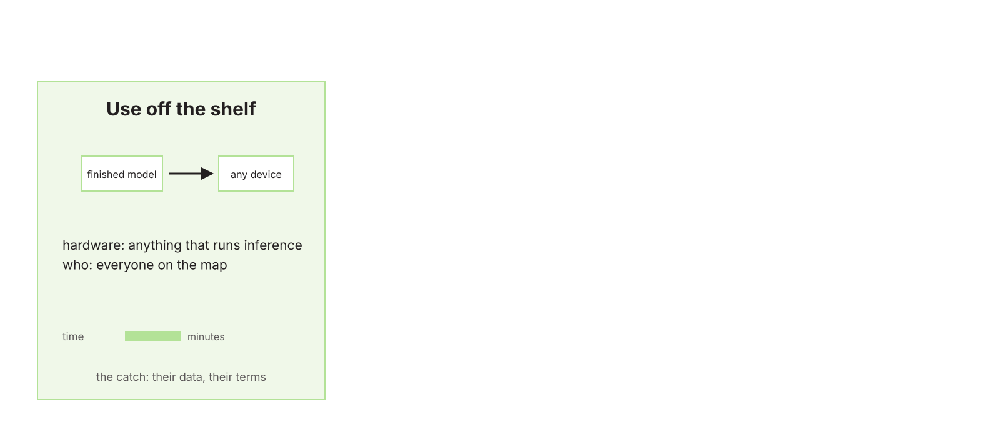
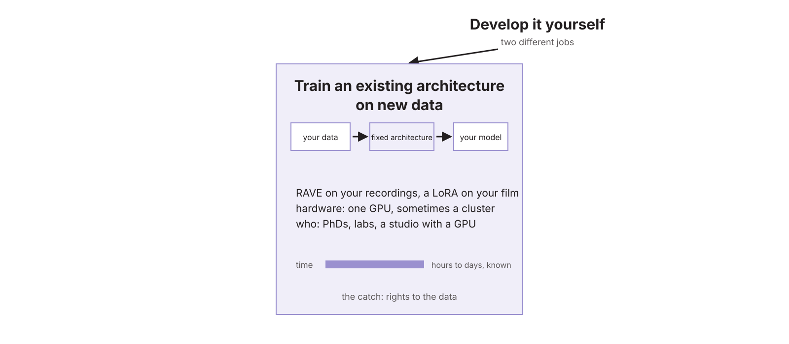
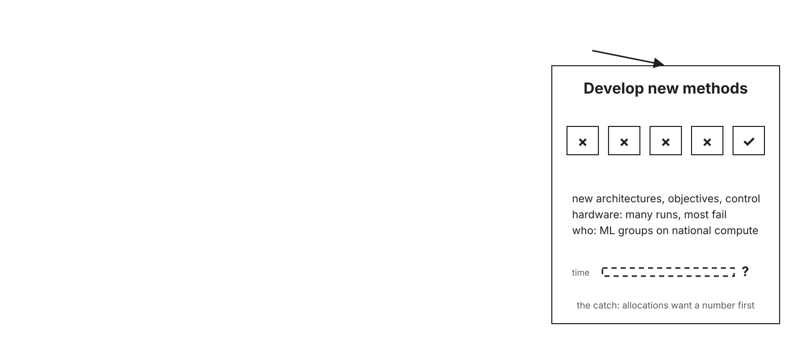
Creative AI is not "traditional" AI
AI for a task
- one task, one right answer
- batch: throughput matters, latency does not
- large, clean, labelled data
- measured by accuracy on a benchmark
- runs in a data centre, out of sight
AI for creative work
- open-ended: many good answers, or none
- real-time and interactive: latency is the constraint
- small, personal, messy data, often your own
- measured by taste, context and who is asking
- on stage, in the room, on the body: control matters
Tasks against platforms: a rough guide
| Task | Commercial API | Laptop | Laptop + GPU | Workstation | Fox-type cluster | Olivia / LUMI |
|---|---|---|---|---|---|---|
| Chat, writing, code | ● | ● 7–14B | ● | ● 70B | ◐ overkill | ◐ overkill |
| Transcription (Whisper) | ● | ● | ● | ● | ◐ batch | ◐ overkill |
| Image generation | ● | ◐ slow | ● | ● | ◐ batch | ◐ overkill |
| Video generation | ● | ○ | ◐ short clips | ● | ◐ batch | ◐ |
| Real-time audio on stage | ○ latency | ● | ● | ● | ○ | ○ |
| Train a small model (RAVE, classifier) | ○ | ◐ slow | ● | ● | ● | ◐ overkill |
| Fine-tune an LLM (7–14B) | ◐ data leave | ○ | ◐ LoRA | ● | ● | ● |
| Train from scratch (NB-scale multimodal) | ○ | ○ | ○ | ○ | ◐ small | ● |
| Sensitive data (health, pupils) | ○ | ● offline | ● offline | ● offline | ◐ TSD-type only | ○ |
By person: a plausible stack today
| Who | Everyday | Creative work | Training | The catch |
|---|---|---|---|---|
| Musician on stage | laptop, local chat | Max + nn~, RAVE | studio GPU overnight, or a friend with Fox | no institution: no Fox, no NRIS |
| Filmmaker | commercial tools | ComfyUI, open video models on a workstation | LoRA on own footage | rights of the base model |
| Teacher in a school | Feide-gated hosted chat | browser tools only | none | no Norwegian, GDPR-safe creative tool exists |
| Music therapist | offline laptop | small local models | inside TSD, if GPUs | consent and secure-zone capacity |
| Bachelor student | Ollama + Open WebUI | Whisper, notebooks | Colab-type, or a course allocation | depends entirely on the institution |
| PhD / ML researcher | laptop | prototypes locally | Fox, then NRIS, then LUMI | allocation rounds and the paperwork |
| Cultural institution | commercial APIs | hosted open models with a contract | KI-fabrikken, if they qualify | nobody has defined them as a user category |
| Startup / studio | commercial APIs | own GPUs or cloud | KI-fabrikken as "business" | cost, and no research partner |
| National Library | own lab | own models | Olivia, LUMI | sustained multi-year allocation |
| Who | Own hardware | Institutional servers, VDI, Fox-type | National HPC NRIS, Olivia | KI-fabrikken | Hosted open models EU providers | Commercial APIs |
|---|---|---|---|---|---|---|
| Researchers, big universitiesUiO · UiB · NTNU · UiT | yes | yes, varies | by application | yes | own budget | own budget |
| Researchers, other universities and collegesUiA · INN · HiØ · HVL · NMH · KHiO · AHO · Kristiania … | yes | often little or none | by application | yes | own budget | own budget |
| Research institutes | yes | own labs | by application | yes | own budget | own budget |
| Students, bachelor to PhD | own machine | via a supervisor | via a project | ? | rarely | own budget |
| Teachers and schools | tablets, laptops, no GPU | no | no | no | no | Feide-gated, limited |
| Freelance artists | if affordable | no | no | ? | own budget | own budget |
| Public sectormuseums · libraries · NRK · municipalities | yes | own IT, no GPUs | no | "public sector" | budget, procurement | budget, procurement |
| Private sectorstudios · film · games · startups | yes | own | only with a research partner | "business" | budget | yes |
Data: open by count, closed by volume
Open, with an API
- Wikidata, KulturNav, the authority files
- half of DigitaltMuseum, Nasjonalmuseet
- Kartverket, SSB, Stortinget, Brønnøysund
- Språkbanken: thousands of hours of speech
Closed, by the hour and the page
- the library's books, newspapers, radio, TV, web
- NRK, TV 2, NTB, Retriever
- Bokhylla, Filmarkivet
- nothing open for music, film, video, dance, theatre, games, design
Observations to argue with
- The academic infrastructure is built for batch science, not for a rehearsal room.
- The people who most need cheap, controllable, rights-clean models have the least access.
- Access depends on which institution you sit in, not on what you need.
- Open Norwegian models exist for language and speech, and for nothing creative.
- The whole Norwegian cultural heritage sits in one collection. Nobody has trained a multimodal model on it.
- Nobody has defined "artist", "teacher" or "cultural institution" as a user of national compute.
- The low-threshold national service (NAIC) is paused; its successor is not yet here.
- Workflows are locked to the system they were built on. Fox is not Olivia, and Olivia is not LUMI.
- When big systems are bought, the users are rarely asked first.
- Norway's data is open by count and closed by volume. The library is licensed for reading, not mining.
- No text-and-data-mining exception in law. The bill is in committee; input is due 28 September.
- 200 researchers on a top-tier subscription is 6 million kroner a year. Per seat is the wrong shape; per use through a gateway is the right one.
- There will never be unlimited access to the best models. Good enough, on a quota, is the plan.
- One PhD fellowship is 150 seat-years. Tokens multiply people; they do not replace them.
Tokens or people
| What | Kroner | The same money as |
|---|---|---|
| One seat, one year | 30 000 | 1 seat-year |
| One PhD year | 1 400 000 | 47 seat-years |
| 200 seats, one year | 6 000 000 | 1.3 fellowships, or 4 PhD years |
| 200 seats, five years | 30 000 000 | 7 fellowships |
National: quotas through one door
- the gateways and clusters of the big institutions, opened to everyone else on the map
- a quota per person, paid per use by the unit, across vendors
- frontier models when they are needed, open models for the rest
- quota categories for artists, schools and museums, not only researchers
Local: small and smart
- small open models on the laptop, the board, the phone
- several small agents, one job each, instead of one large model for everything
- energy and cost in the room, where you can see them
- for the stage, the classroom, the museum
Pay per use, not per seat
One door
- an institution-hosted gateway in front of commercial and open models: UiO GPT, GPT NTNU
- chat, shared assistants, files, and now API keys for agents and coding tools
- about 50 public-sector institutions run it
Keys by data class
- one personal key per data class: red, yellow, green
- the key is independent of the model
- a monthly quota per model
- a unit authorises a quota and pays for actual use
Good enough, not best
- the best open-weight models, served on Fox and IDUN, cover most jobs
- smaller models win on price per result
- the frontier models on a quota when they are needed, without a seat per person
A proposal to argue with
How a centre could decide
A share, not a line
- budget tokens as a share of personnel cost, as equipment always was
- 3 to 5 per cent of a PhD year is 40 000 to 70 000 kroner
- enough for heavy pay-per-use through a gateway
Quotas by role
- a PhD in machine learning, a WP leader and a museum partner do not need the same budget
- the gateway model, applied to the centre's own money
- the unit sees what its people actually use
Not fungible
- fellowships are in the contract; tokens come from operating money
- so the real trade-off is tokens against a lab engineer, workshops, travel, hardware in the room
- 50 seats is one engineer who builds the local alternative
What do you use, and what can you not get?
nettskjema.no/a/649352